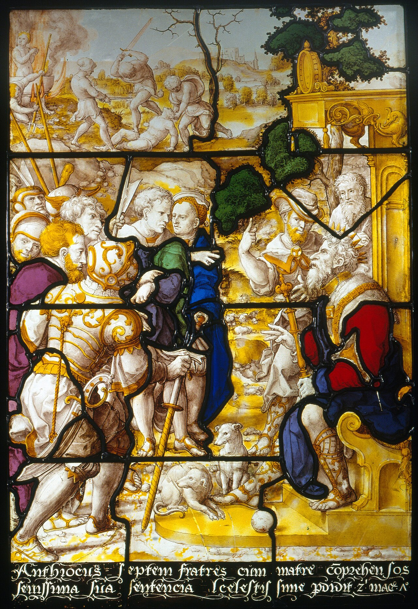
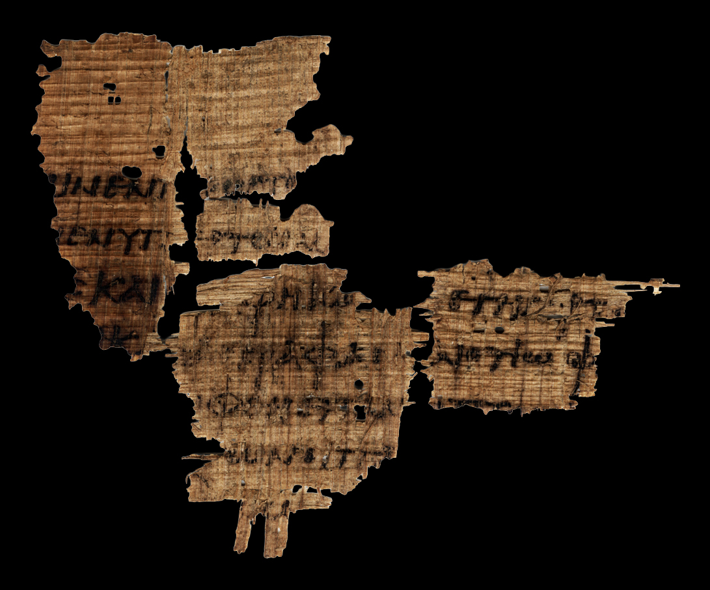

La historia se cuenta siempre igual. Israel creía en la resurrección de los cuerpos, que es una idea hebrea y corporal. Luego llegó Alejandro, y con él el griego, y con el griego la idea platónica de un alma inmortal que se separa del cuerpo al morir. El cristianismo heredó las dos, no supo elegir, y de esa indecisión salió el esquema que todavía se enseña: el alma al cielo primero, el cuerpo al final.
La historia es buena. Tiene un culpable identificable, una fecha y una moraleja. Y en su punto decisivo es cronológicamente falsa.
Porque la idea de que los muertos están en algún sitio, conscientes, alojados y esperando el juicio —lo que la teología llamará «estado intermedio»— aparece por escrito en un texto judío del siglo III a.C., anterior a Daniel 12, anterior a los Macabeos y anterior a que el vocabulario filosófico griego entre en la literatura judía. No es un préstamo. Es un desarrollo interno de la apocalíptica.

El texto que está antes
El Libro de los Vigilantes son los capítulos 1 a 36 de lo que llamamos 1 Enoc, y su datación en el siglo III a.C. es consenso. No depende de argumentos internos: los fragmentos arameos hallados en la cueva 4 de Qumrán ponen un límite superior duro. El más antiguo, 4QEna, es de comienzos del siglo II a.C. por paleografía, y un manuscrito no es nunca el original.
En el capítulo 22, Enoc es llevado a una montaña en occidente y ve unos «lugares huecos» —cámaras— donde los espíritus de los muertos están reunidos. Y están separados: los justos junto a una fuente de agua luminosa; los pecadores retenidos «con gran dolor hasta el gran día del juicio».
Estos lugares huecos han sido hechos para que los espíritus de los muertos se reúnan en ellos… hasta el día de su juicio. 1 Enoc 22
Enumérese lo que hay ahí: muertos que persisten como espíritus, separación entre justos y pecadores, sufrimiento actual de unos, espera de todos, y un juicio futuro que todavía no ha ocurrido. Es el estado intermedio completo, y está montado en un texto judío, en arameo, antes de Daniel.
Compárese con lo que dice Daniel 12,2, hacia el 165 a.C. y en plena crisis macabea: despertarán «los que duermen en el suelo de polvo», unos para vida eterna y otros para oprobio. No hay intervalo, no hay cámaras, no hay conciencia: hay sueño y hay despertar. El texto famoso es posterior al texto que introduce el intervalo, y más simple.
Conviene ser preciso sobre qué prueba esto y qué no. No prueba que no hubiera influencia griega en el judaísmo del Segundo Templo: la hubo, y masiva, y llegaremos a ella en un momento. Lo que desmonta es la secuencia: que primero hubiera un modelo hebreo puro y que el intervalo entrase después desde fuera. El intervalo ya estaba.
El mismo martirio, contado dos veces
Hay una manera de ver el cambio de lengua sin ninguna teoría de por medio: coger un mismo relato contado dos veces con dos siglos de diferencia.
El relato es el de la madre y los siete hermanos torturados por Antíoco. En 2 Macabeos 7, del siglo II a.C., uno de los hermanos extiende las manos ante el verdugo y dice que las recibió del Cielo y que espera recibirlas otra vez. Otro dice que el Rey del universo los resucitará a vida eterna. La esperanza es corporal, concreta y localizada en los miembros que están a punto de cortarle.
En 4 Macabeos, que es una reelaboración retórica del mismo episodio escrita en griego entre el 20 y el 130 de nuestra era, el mismo martirio produce otra cosa. Los mártires reciben «almas puras e inmortales» de manos de Dios. Y hay un detalle que vale más que cualquier argumento: 4 Macabeos no menciona la resurrección ni una sola vez.
Dos textos, un episodio, dos modelos incompatibles. No hay aquí ninguna polémica entre ellos; simplemente el segundo autor dispone de otro vocabulario y lo usa sin sentir que esté cambiando nada.

Lo mismo, con más aparato, en la Sabiduría de Salomón y en Filón. La Sabiduría trae athanasía y aphtharsía, y una frase que no podría estar en la Biblia hebrea: «el cuerpo corruptible agrava al alma». Filón lee Génesis 1,27 y Génesis 2,7 como dos hombres distintos, y llama al cuerpo tumba y cárcel. El préstamo griego, aquí, es indiscutible: esta es la influencia demostrada que la entrega anterior dejó anotada.
Josefo, o el testigo que nos estorba
Para saber qué pensaban de verdad fariseos, saduceos y esenios sobre la supervivencia dependemos casi por completo de Flavio Josefo. Y es un problema, porque Josefo escribe en griego, para lectores griegos, y traduce lo que describe a categorías que sus lectores reconozcan.
El dato que lo delata es léxico: cuando Josefo describe la creencia de los fariseos, usa el vocabulario de la inmortalidad y no usa nunca anástasis, la palabra griega para resurrección. De los esenios dice que tienen el cuerpo por una prisión, con una topografía del más allá que es de manual griego. Y de los saduceos, que sostienen que «las almas mueren con los cuerpos».
¿Qué hacemos con eso? Hay tres lecturas y las tres son serias. C. D. Elledge sostiene que es resurrección helenizada: Josefo traduce para que se le entienda. Sami Yli-Karjanmaa lo toma literalmente. Jonathan Klawans sostiene que lo que estamos leyendo es la teología del propio Josefo, no la de los grupos que describe. Lo honesto es decir que no lo sabemos, y que sobre los saduceos, además, tenemos una sola fuente y es hostil.
Veintinueve textos, dos maneras incompatibles de sobrevivir
Cada texto en la columna del modelo que sostiene, y todos ordenados por fecha, de arriba abajo. Lo que hay que mirar no es ninguna casilla: es la forma de la nube. Si los dos modelos se hubieran sucedido, las columnas se irían vaciando y llenando por turnos. Pulsa cualquier texto para ver el argumento de cada lado.
Qumrán, que es un agujero
Sería muy cómodo que los rollos del mar Muerto resolvieran la cuestión. No la resuelven, y hay que decirlo antes de citarlos.
El tratado de los Dos Espíritus de 1QS habla de destinos, pero no de mecanismos: los espíritus son fuerzas asignadas a cada persona, y cualquiera de los dos modelos puede leerse ahí si uno va buscándolo. Es el punto más flojo de toda la evidencia. Los Hodayot han sido leídos por Émile Puech como testimonio de resurrección y por la mayoría como lenguaje de iluminación y santificación del vivo.
Donde sí hay algo claro es en dos textos que no son sectarios, lo que paradójicamente los hace más útiles, porque no describen a la comunidad de Qumrán sino al judaísmo del que formaba parte: 4Q521, que dice que Dios «hará vivir a los muertos», y 4Q385 Pseudo-Ezequiel, donde los huesos secos de Ezequiel 37 dejan de ser metáfora nacional y pasan a ser recompensa escatológica de personas concretas.
Y luego está 4QInstruction, que ofrece una cuarta vía que no es ni alma ni resurrección: el destino del elegido es ser elevado a la comunión de los ángeles. Goff, Elgvin y Lange siguen discutiéndolo. Lo menciono porque la discusión pública tiende a plantearse como si solo hubiera dos opciones, y en los textos hay más.
Pablo, que no tiene doctrina pero tiene un problema

Pablo no elabora una doctrina del alma. No la necesita y no le interesa. Lo que sí tiene es un problema práctico y urgente, y de él sale todo lo demás: cree que el fin está cerca, y sus fieles se están muriendo antes.
El primero de sus textos sobre el asunto lo dice sin disimulo. En 1 Tesalonicenses 4, hacia el año 50, los tesalonicenses están alarmados porque algunos han muerto antes de la venida del Señor. Y aquí hay que detenerse, porque el argumento más fuerte de toda la sección es negativo: ese apuro solo tiene sentido si no tenían ninguna doctrina consoladora del alma que sobrevive. Si la hubieran tenido, no habría nada que consolar.
Lo que Pablo les responde es enteramente escatológico: los muertos «duermen», resucitarán primero, y después los vivos serán arrebatados a su encuentro. Ningún alma, ningún cielo inmediato. Y el sujeto que resucita no es «las almas de los muertos»: es «los muertos».
Cuatro años más tarde, en 1 Corintios 15, el problema es otro: los corintios encuentran absurda la resurrección corporal y preguntan con qué clase de cuerpo vuelve uno. La respuesta de Pablo es la pieza más malinterpretada del Nuevo Testamento, y casi siempre por culpa de la traducción.
Pablo dice que se siembra sōma psychikón y se levanta sōma pneumatikón. La Reina-Valera pone «cuerpo natural» y «cuerpo espiritual», y ahí nace el malentendido, porque introduce una oposición natural/sobrenatural que no está en el griego. Los dos términos son adjetivos en -ikós sobre el mismo sustantivo, y en griego esos adjetivos denotan pertenencia o principio animador, no material de fabricación. Un cuerpo pneumatikón es un cuerpo animado por el espíritu, igual que un cuerpo psychikón es un cuerpo animado por la psychē.
La prueba interna está en el propio Pablo: en 1 Corintios 2,14 el «hombre psychikós» no es un hombre hecho de alma, es un hombre regido por la psychē y no por el espíritu. Y el sustantivo que Pablo mantiene en los dos miembros es sōma: no contrapone cuerpo a espíritu, contrapone cuerpo a cuerpo. Si hubiera querido decir que el muerto resucita sin cuerpo tenía a mano toda la lengua de Filón, y no la usó.
Lo mismo con «carne y sangre no pueden heredar el reino de Dios», que se cita siempre como si negara la resurrección física. Sarx kai haima es un semitismo —basar wa-dam— para «el ser humano en su condición mortal». Y el propio versículo lo explica, porque el segundo miembro del paralelismo sustituye «carne y sangre» por «la corrupción». El problema no es la carne: es la corruptibilidad. Siete versículos después Pablo dice que «esto corruptible» tiene que vestirse de incorruptibilidad, y ese esto señala a este cuerpo.
Sōma psychikón / sōma pneumatikón. Dos adjetivos en -ikós sobre el mismo sustantivo. En griego esos adjetivos denotan principio animador, no material de fabricación.
«Cuerpo natural» / «cuerpo espiritual». La oposición natural/sobrenatural no está en el griego, y es la que produce el malentendido.
El «hombre psychikós» de este versículo no es un hombre hecho de alma: es un hombre regido por la psychē y no por el espíritu. Mismo adjetivo, mismo autor, catorce capítulos antes.
«Carne y sangre» es basar wa-dam: el ser humano en su condición mortal. Y el propio versículo lo glosa, porque el segundo miembro del paralelismo pone «la corrupción» en su lugar.
«Es preciso que esto corruptible se vista de incorruptibilidad.» Toûto señala a este cuerpo: continuidad con cambio, no sustitución.
Y entonces, un año después, en 2 Corintios 5, algo se tuerce. Pablo habla de una tienda terrestre que se deshace y de una casa celeste, y dice que preferiría «ausentarse del cuerpo y estar presente al Señor». Eso suena exactamente a estado intermedio. Pero en los versículos 3 y 4 hace algo que no encaja: rechaza la desnudez. No quiere desvestirse, quiere sobrevestirse. Y estar sin cuerpo es, precisamente, lo que le da grima.
Es el texto más disputado de todo el expediente. John Cooper y Murray Rae leen ahí un estado intermedio; Richard Middleton y Joel Green sostienen que no lo hay; N. T. Wright dice que Pablo lo contempla, pero como algo indeseado, y sin llamarlo alma en ningún momento.
Y hay un detalle precioso, del que esta casa no se priva: en 2 Corintios 5,3 se ve a un copista apretando el tornillo. La variante ekdysámenoi, «habiéndonos desvestido», invierte el sentido de la frase. Alguien, en algún momento de la transmisión, encontró el pasaje incómodo y lo empujó.
Finalmente, en Filipenses 1, hacia el año 60, Pablo escribe que desea «partir y estar con Cristo, lo cual es muchísimo mejor». Es el texto difícil para quien defiende que Pablo no admite ningún intervalo consciente — y conviene señalar que los propios defensores de esa posición lo reconocen como tal, Middleton el primero. La respuesta que dan es filológica y no es mala: analŷsai es un verbo náutico y militar —levar anclas, levantar el campamento—, no antropológico, y en el pasaje no se nombra ningún alma.
Sobre Hebreos 12,23 —«los espíritus de los justos hechos perfectos»— se lee a menudo que Attridge y Koester, los dos comentaristas de referencia, lo leen como prueba de un alma separable y consciente. No hay base para esa atribución. Los paralelos que se aducen en la discusión —Jubileos 23,30-31; 1 Enoc 22,9; 2 Baruc 30,2— empujan en la dirección contraria: la de una fórmula apocalíptica corriente para los fieles muertos que todavía esperan. Lo que sí sigue abierto es si el marco global de Hebreos es platónico o apocalíptico.
Y sobre Lucas 23,43 —«hoy estarás conmigo en el paraíso»— dos precisiones. La primera: no hay variante textual; las únicas del versículo son la adición de «Jesús» como sujeto y el orden de dos palabras. Todo el debate es de puntuación editorial, y de seis ediciones críticas cinco puntúan antes de «hoy» mientras el SBLGNT se abstiene de puntuar. La segunda: la lectura alternativa no es solo de los Testigos de Jehová. La defienden, en revistas revisadas, Wilson Paroschi, Thomas Shepherd, E. W. Bullinger, Leroy Froom y Samuele Bacchiocchi. Sigue siendo minoritaria y no está cerca del consenso; pero decir «solo los Testigos» es un error de hecho, y los errores de hecho debilitan al que los comete, no al contrario.
Lo que hay al final de la secuencia
Puestos en orden —1 Tesalonicenses 4, 1 Corintios 15, 2 Corintios 5, Filipenses 1— los cuatro textos no forman una doctrina. Forman otra cosa, y es más interesante: la presión creciente de un problema sobre un vocabulario que no fue hecho para responderlo. El sueño, la transformación, la casa celeste, la desnudez temida, el estar-con-Cristo. Recursos incompatibles acumulados por alguien que tiene que consolar a gente concreta cuyos muertos no esperaban.
La costura que el cristianismo posterior soldará —alma al cielo, cuerpo al final— está aquí en estado de material bruto.
Quien la suelda del todo, y sin fricción ninguna, es 4 Esdras 7, hacia el año 100. Ahí el espíritu sale del cuerpo, adora, pasa siete días de tránsito y va a una de siete órdenes de gozo o de tormento, en cámaras guardadas — y todo eso ocurre antes de la resurrección escatológica final, que sigue estando. Cincuenta años después de Pablo, el híbrido ya no es un problema para nadie: es la arquitectura normal.
Lo que es consenso: la datación del Libro de los Vigilantes en el siglo III a.C.; que 4 Macabeos no menciona la resurrección; que Pablo mantiene sōma en los dos miembros de 1 Corintios 15,44 y que sōma pneumatikón no significa «inmaterial»; y que la soldadura de los dos modelos está completa y sin fricción en 4 Esdras 7.
Lo que está en debate abierto: qué significa exactamente sōma pneumatikón —cuerpo hecho de materia neumática para Dale Martin y Engberg-Pedersen, animado por el Espíritu para Wright y Zerbe, informado por él para Tappenden—; si 2 Corintios 5 enseña un estado intermedio; y qué estaban pensando de verdad los fariseos y los esenios, sobre lo que dependemos de un testigo que traduce.
Una cifra que no vamos a dar redonda, porque no lo es. Psychē aparece en el Nuevo Testamento 102 veces según el texto del SBLGNT, 103 según la lectura del Nestle-Aland en Judas 15, y 105 en el Textus Receptus —que es la cifra del recuento de la King James, y cuadra—. La diferencia no es ruido: son cuatro decisiones críticas concretas, en Marcos 12,33, Lucas 9,56, Hechos 2,31 y Judas 15. Hay además una cifra de 104 muy citada que no corresponde a ninguna edición impresa: es una lista mixta. Dar «psychē aparece N veces» sin decir sobre qué edición es el error metodológico más repetido de la literatura apologética de los dos bandos.
Y sobre Qumrán, la honestidad obligada: no resuelve la cuestión. El tratado de los Dos Espíritus es el punto más flojo de la evidencia y admite las dos lecturas. Lo decimos antes de citarlo, no después.
Queda una pregunta que esta entrega no puede responder y que la siguiente sí: si hacia el año 100 la arquitectura ya está montada, ¿por qué la Iglesia tarda catorce siglos en definir qué es exactamente eso que se va al cielo? La respuesta corta es que fue definiendo una y otra vez qué les pasa a las almas, y no definió nunca qué son. Hasta que lo hizo, con anatema, en 1513.
Fuentes
Texto griego cotejado contra el SBLGNT (Michael W. Holmes, 2010) y su aparato, y contra el Textus Receptus de Scrivener (1894) para los recuentos comparados.
C. D. Elledge, Resurrection of the Dead in Early Judaism, 200 BCE-CE 200, Oxford University Press, 2017 · George W. E. Nickelsburg, 1 Enoch 1, Hermeneia, Fortress · John Granger Cook, sobre Jubileos 23 (2024) · Émile Puech, La croyance des Esséniens en la vie future.
Sobre Pablo. Oscar Cullmann, Immortality of the Soul or Resurrection of the Dead?, 1955 · Robert H. Gundry, Sōma in Biblical Theology, 1976 · Dale B. Martin, The Corinthian Body, Yale University Press, 1995 · Troels Engberg-Pedersen, Cosmology and Self in the Apostle Paul, OUP, 2010 · N. T. Wright, The Resurrection of the Son of God, Fortress, 2003 · John W. Cooper, Body, Soul, and Life Everlasting, Eerdmans, 1989 · Joel B. Green, Body, Soul, and Human Life, Baker, 2008 · Gordon Zerbe, «Paul on the Human Being as a "Psychic Body"», Direction 37/2 (2008) 168-184 · Frederick S. Tappenden, Resurrection in Paul, SBL Press, 2016 · J. Richard Middleton, A New Heaven and a New Earth, Baker, 2014.
Sobre Hebreos 12,23. Gareth Lee Cockerill, «Hebrews 12:18-24: Apocalyptic Typology or Platonic Dualism?», Tyndale Bulletin 69.2 (2018) 225-239 · David M. Moffitt, Atonement and the Logic of Resurrection in the Epistle to the Hebrews, NovTSup 141, Brill, 2011.
Sobre Lucas 23,43. Wilson Paroschi, «The Significance of a Comma: An Analysis of Luke 23:43», Ministry, junio de 2013 · Thomas R. Shepherd, JATS 32/1-2 (2021) 171-189 · Alexey Somov, Representations of the Afterlife in Luke-Acts, LNTS, T&T Clark, 2017.